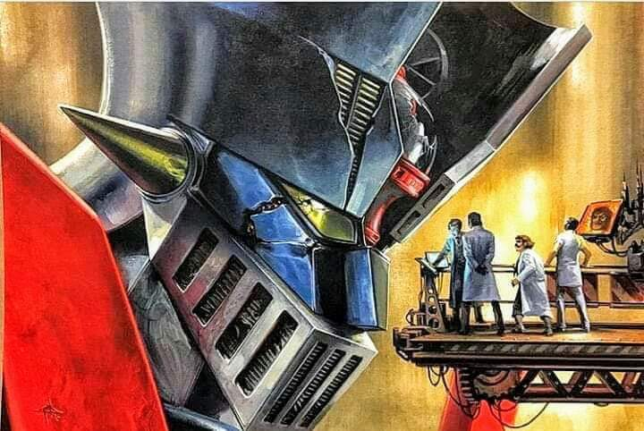

Mazinger Z: Lo que debes saber sobre su creador Go Nagai

A fines de los 70 e inicio de la década de los 80 Mazinger Z causó furor en Latinoamérica y llegó a la televisión peruana. ¿Quién es el creador del anime que marcó a toda una generación?
Acá unos datos que seguro te van a interesar:
El nombre real del padre de esta popular anime es Kiyoshi Nagai, conocido por su seudónimo Go Nagai, y nació el 6 de septiembre de 1945 en Wajima, Japón.
La decisión de convertirse en mangaka (palabra usada en Japón para referirse al historietista) le vino a la cabeza cuando su hermano le prestó el manga de Lost World, de Osamu Tezuka (Creador de Astro Boy y La Princesa Caballero)
Nagai siempre fue un aplicado estudiante, pero eso no le bastó para aprobar los exámenes de ingreso a la universidad. Además sufrió una grave enfermedad que lo hizo pensar que moriría y no podría alcanzar su sueño. Pero su destino ya estaba trazado y tras recuperarse por completo publicó el manga Kuro No Shishi (León Negro, 1967).
Con la publicación de este manga llamó la atención del ilustrador Shotaro Ishimori, creador de las historias de Sankuokai, famosa serie de televisión transmitida también en Perú.
En el año 1968 publicaría Harechi Gakuena (La Escuela Indecente) y su obra entraría en la polémica ya que Go Nagai se convertiría en el primer mangaka que introduciría el erotismo en historias infantiles, rompiendo el tabú de hablar de sexo abiertamente.
Se considera que Go Nagai es uno de los precursores del hentai. ¿Ahora tiene más sentido el porqué de los misiles de Afrodita?
En el año 1972 publica Mazinger Z en el semanario Shonen Jump, llegando el éxito inmediato debido a que era la primera vez que un robot era piloteado. El reconocimiento mundial llegaría tras la trasmisión del anime de la historieta el 3 de diciembre de 1972 por el canal de televisión Fuji TV. A esta ‘fiebre robótica’ se sumarían sus nuevas creaciones, Getter Robot y UFO Robot Grendizer.
Go Nagai en 2008. (Foto: Wikimedia)
Datos curiosos de Mazinger Z
El origen del popular personaje se origina en un día en que Go Nagai se encontraba en un embotellamiento y se le ocurrió la idea que sería bueno tener un carro que se transformara robot y pudiera saltar para evitar el tráfico.
El personaje principal y piloto de Mazinger Z se llama Koji Kabuto (‘kabuto’ es el nombre de un casco tradicional japonés). Entre otras palabras el robot necesita del ponerse este en la cabeza para funcionar.
Mazinger Z o Majingā Zetto en japonés, es la unión de “Ma” (魔) que significa demonio y “Jin” (神) que significa dios y “Ger” de energía y “Z” porque a Go Nagai no se le ocurrió otra letra.
A la par de Mazinger Z, Go Nagai crea Devilman (Hombre Diablo) en 1972, incursionando en el género de terror gráfico para cambiarlo por completo, dándole un enfoque más maduro, con finales trágicos, e introduciendo al primer anti-héroe del anime. La influencia de este estilo se ve en forma marcada en los trabajos de CLAMP (Creadoras de las Guerreras Mágicas)
A pesar de las críticas, Go Nagai siguió desarrollando mangas de corte erótico como Kekko Kamen en 1974, historia que cuenta las aventuras de una justiciera que combate el crimen con una máscara roja, bufanda, capa, guantes y botas, pero nada más.
La mente creadora de Go Nagai no tenía cuando parar y crea Cutie Honey y cambia por completo el género del manga con Magical Girl (anime que narra las aventuras de chicas con poderes mágicos), añadiéndole una personalidad más fuerte al personaje femenino, ya que luchaba contra la injusticia sin la ayuda de un personaje masculino y, claro, añadiéndole el correspondiente toque de erotismo.
Go Nagai es uno de los autores de manga más influyentes del mundo y para los fans de este género está a la altura de Stan Lee o Jack Kirby de Marvel Comics. Actualmente no tiene descanso y está serializando el manga Shin Mazinger Zero vs Ankoku Daishougun y preparando un nuevo manga llamado Devilman Saga, que tiene como fecha de estreno el 25 de diciembre de este año por la revista Big Comic.
(Por Luis Carnero)